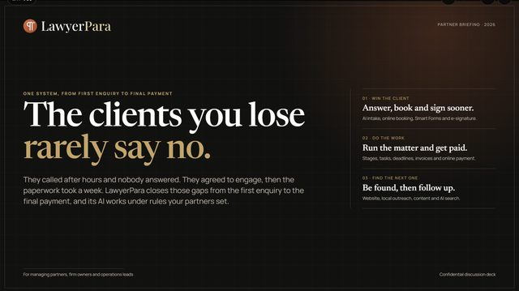
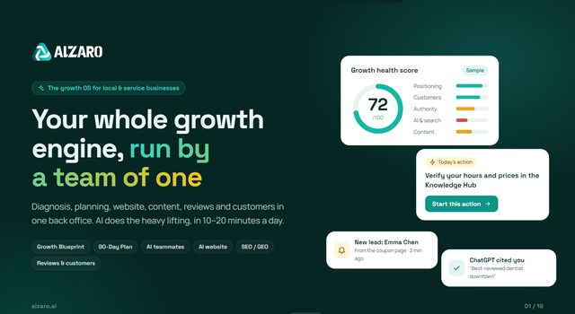
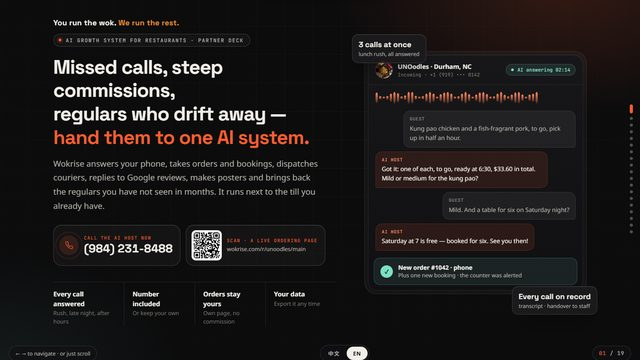
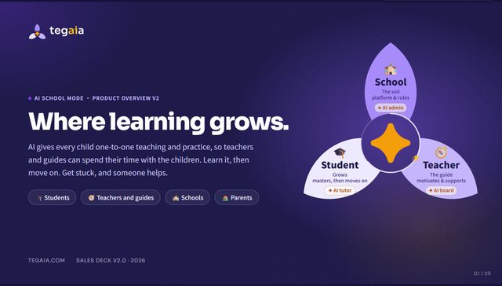
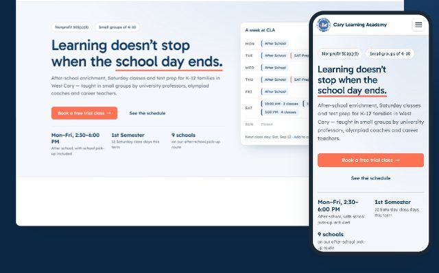
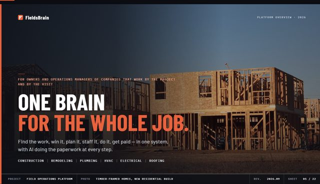

Over twenty years of shipping software, and the last three putting AI into real businesses.
I build AI products end to end, from the database to the screen a customer sees. In the past year I designed and built 11 AI platforms on my own for law firms, restaurants, schools and contractors. Before that I led a 15-person engineering team and ran high-traffic booking systems. I still write the code.
Where the years went
If the posting asks for it, here is where I did it
| Requirement | Evidence |
|---|---|
| LLM / generative AI applications | LawyerPara, Alzaro, Tegaia, Alzaro AdsOpenAI, Anthropic, Gemini; live products with subscription plans |
| AI agents and multi-agent workflows | Six case-level assistants in LawyerParaEach agent has its own permission tier |
| RAG and grounded answers | Alzaro Knowledge Hub, Wokrise restaurant agentAnswers only from verified business facts |
| Voice AI, telephony | Wokrise AI front deskTwilio, WhatsApp Cloud API; hands calls to staff on request |
| Responsible AI, privacy, compliance | Human approval, PII masking, audit logs; 21 CFR Part 11 at QIAGEN |
| API design and enterprise integration | SAP and GeneGlobe at QIAGEN; 12 supplier APIs at Amerilink |
| Cloud and scale | AWS, Azure, Google Cloud, Alibaba CloudBooking API behind a load balancer rated at 10K QPS |
| Testing and quality | 1,487 automated tests on a live school systemPHPUnit, Postman, SoapUI |
| Team leadership | Built the U.S. team from zero to 15 at Amerilink |
Things you can open right now

LawyerParaAI assistants for law firms, with partner approval on every client message
AlzaroAI growth platform for local businesses
WokriseVoice AI that answers a restaurant’s phone
TegaiaAI tutor that gives hints, not answers
Cary Learning AcademySchool system in daily use, 1,487 automated tests
FieldsBrainField-service software for contractorsQuick answers
Is he working now?
Yes. Full time as a Senior Software Engineer at QIAGEN since 2021, and part time as CTO of AAWEA, a nonprofit for entrepreneurs, since 2025.
Individual contributor or manager?
Both, by choice. I led a team of 15 at Amerilink, and today I design and code entire products myself. I am most useful as a senior or lead engineer who still ships.
How much real AI experience?
Three-plus years of building with OpenAI, Anthropic and Gemini APIs, including products with subscription plans and a voice agent answering real customer calls.
What is the fastest way to reach him?
Email james.wang@apideed.com or message me on LinkedIn.
I started as a web developer in Harbin, building websites for American companies from the other side of the world. Now I build AI for the restaurant and the law office down the road. The job is the same: make something a busy person can trust on an ordinary Tuesday.